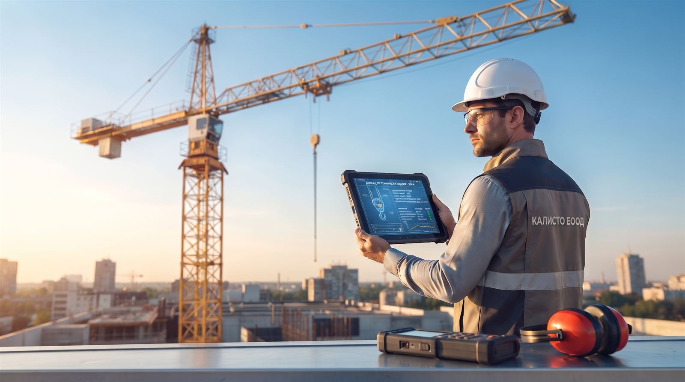
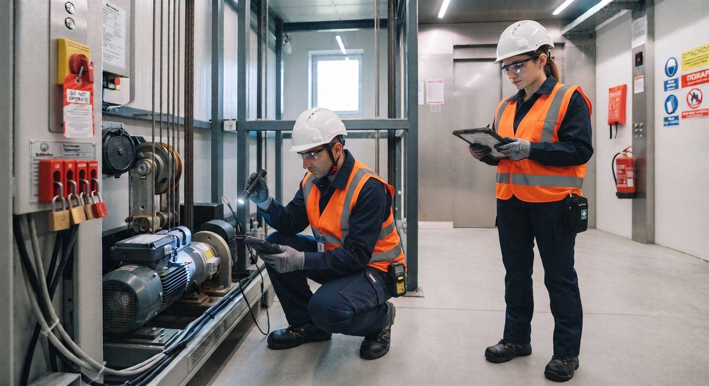
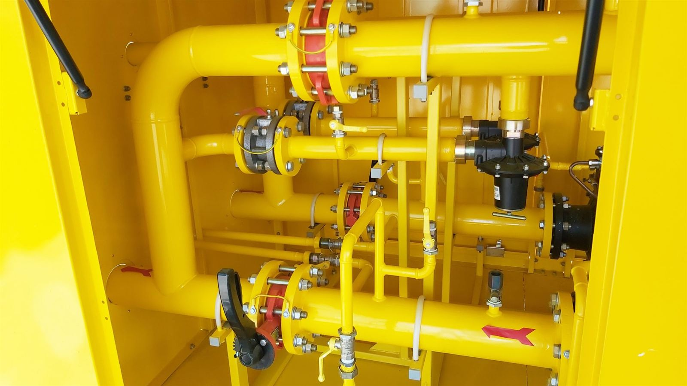

Технически надзор Русе.
Лицензиран технически надзор в Русе и цяла България. КАЛИСТО ЕООД извършва прегледи в обхвата на лицензии № 448 и № 839: котли, съдове под налягане, тръбопроводи, газови съоръжения, повдигателни съоръжения, подемници и асансьори.

Лицензирани от ДАМТН
Официално регистрирани за съоръжения с повишена опасност.
Национално покритие
Технически надзор на територията на цялата страна.
Пълен обхват
Асансьори, котли, съдове под налягане и газови инсталации.
Бърза реакция
Пълна техническа документация и коректни срокове.
02 - Компания
Технически надзор, който защитава хора и активи.
Работим по стандартите на ДАМТН. Техническият надзор в Русе и в цялата страна е документиран, независим и насочен към безопасната експлоатация на съоръженията.
03 - Обхват
Обхват на техническия надзор
Обхват по лицензии № 448 и № 839. Изберете направление или вижте пълните точки в регистъра.

01
Асансьори
Технически надзор на асансьори в жилищни и промишлени сгради по т. 2.7 от лицензия № 839. Документиран преглед за безопасна експлоатация.
02
Повдигателни съоръжения
Кранове, телфери и товарозахващащи приспособления по т. 2.6.1-2.6.13.
03
Подемници
Строителни и жилищни подемници за хора или хора и товари по т. 2.6.8.
04
Съдове под налягане
Съдове за флуиди от група 2, хладилни уредби и стационарни бутилки.

05
Газови инсталации
Втечнен газ, газови инсталации, ГРП и разпределителни газопроводи.
06
Котли
Парни котли до 0,05 MPa и водогрейни котли до 110 °C.
07
Тръбопроводи
Стационарни метални тръбопроводи за пара и гореща вода по т. 2.3.
Често задавани въпроси
Ясни отговори преди заявка за технически преглед.
Заявете технически надзор.
Обадете се директно. Координираме технически надзор в Русе и в цялата страна от офиса в града.